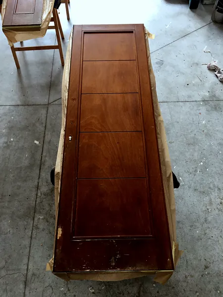
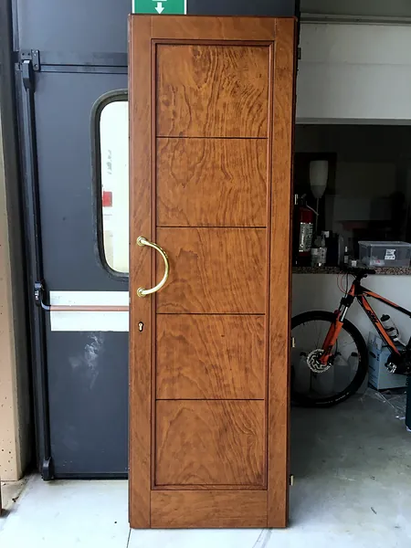
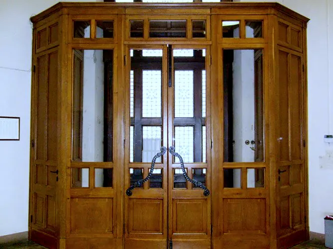

Interpretiamo disegni di architetti o semplici schizzi, oppure progettiamo da zero. Costruiamo e verniciamo nel nostro laboratorio e la posa la curiamo noi, senza personale esterno.
Portato a legno grezzo, per ridare nuova vita e colore
Restauriamo mobili antichi, porte, portoni e finestre. Il lavoro può comprendere il trattamento antitarlo e la verniciatura a gommalacca che si usava un tempo. Usiamo legno vecchio della stessa essenza e il colore lo facciamo al campione, o ripristiniamo quello originale.

Prima

Dopo
Portone d’ingresso: portato a legno grezzo, tre mani di vernice all’acqua, ferramenta nuova.
Mandaci una foto del pezzo
Una foto intera, una di un dettaglio e le misure a occhio. Ti rispondiamo con un preventivo senza impegno.
Puoi anche portarlo in bottega, in Via Levico 18 a Mestrino (indicazioni). Chiamate prima di passare: 049 900 4916.
Come lavoriamo
Dal disegno alla posa, tutto da noi
40anni di esperienza: Mauro e Giuliano hanno cominciato da ragazzini in una falegnameria di Padova
2soci in bottega, con il loro numero di cellulare
22lavori raccontati nelle nostre Realizzazioni
8di questi con la colorazione al campione
Ci chiamate o ci scrivete
Con foto, misure o un disegno, anche un semplice schizzo.
Preventivo senza impegno
Per le cucine anche un’anteprima con immagini rendering e 3D, da modificare prima di costruire.
In laboratorio
Costruiamo con macchinari a controllo numerico e verniciamo da noi, a ciclo d’acqua.
La posa
La curiamo personalmente, senza personale esterno od occasionale.
Materiali e marchi che usiamo
Porte blindate Dierre
Corian per i bagni
Vetrocamera con gas argon
Multistrato marino certificato
Okumè per balconi e scuri
Vernici all’acqua
Realizzazioni
Tre lavori, tre committenti

Palazzo del Bo
Università di Padova
Nella sede del Bo abbiamo restaurato mobili, oggetti, porte scorrevoli e pareti divisorie che portano la firma di Gio Ponti, con i complimenti dei responsabili dell’Università.
Committente
Università di Padova
Lavoro
Restauro di arredi, porte scorrevoli e pareti divisorie